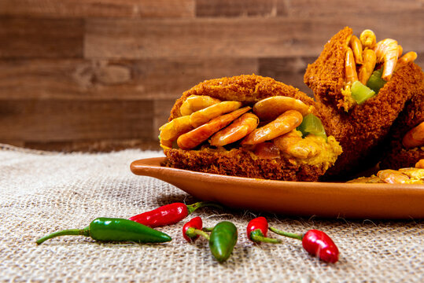

Acarajé

Description
Acarajé is a popular street food in the Northeast of Brazil. It consists of deep-fried balls made
from black-eyed peas, onions, and spices, filled with a spicy mixture of shrimp, onions, tomatoes,
and peppers.
Ingredients
- 500g of black-eyed peas
- 1 onion
- 2 cloves of garlic
- Salt to taste
- Vegetable oil
- 500g of peeled shrimp
- 2 tomatoes
- 2 green bell peppers
- 2 red chili peppers
Instructions
- Soak the black-eyed peas overnight in water.
- The next day, peel the peas by rubbing them together to remove the skins. Then, rinse them thoroughly.
- In a food processor, blend the peas, onion, garlic, and salt to form a smooth dough.
- Heat the oil in a deep fryer or a pan.
- Wet your hands with cold water and shape the dough into balls, about the size of a golf ball.
- Fry the balls in hot oil until golden brown.
- Meanwhile, prepare the filling by sautéing the shrimp, onions, tomatoes, bell peppers, and chili peppers in a pan until the shrimp are cooked through.
- Once the acarajé balls are ready, cut them open and fill them with the shrimp mixture.